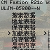
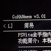

游戏修改
-
【iOS】iMemScan
iOS平台内存修改软件，支持精确搜索
-
【☞主页】【iOS】DLGMemor
iOS平台内存修改软件，支持精确搜索
-
【☞主页】【iOS】H5GG
iOS平台内存修改软件，支持精确搜索和脚本制作
-
【☞主页】【iOS】GameGem
iOS平台内存修改软件，支持精确搜索
-
【☞主页】【iOS】iGameGod
iOS平台内存修改软件，支持精确搜索、模糊搜索和游戏变速等
-
【☞主页】【iOS】iMemEditor
iOS平台内存修改软件，支持精确搜索和模糊搜索，备注：软件没有试用，需要去主页购买后才能使用，A8~A10X处理器的设备下载旧版iGameGuardian
-
【☞主页】【Windows】【macOS】iMazing
Windows、macOS平台iOS设备管理软件，支持游戏存档导出修改和替换等
-
【☞主页】【Android】GameGuardian
Android平台内存修改软件，支持精确搜索、模糊搜索和脚本等
-

【☞主页】【Windows】【macOS】Cheat Engine
Windows、macOS平台内存修改软件，支持精确搜索、模糊搜索和Lua脚本等
-

【PSP】CheatMaster Fusion
PSP主机内存修改软件，支持精确搜索、模糊搜索和金手指等
-

【☞主页】【PSV】GoHANmem
PSV主机内存修改软件，支持精确搜索、模糊搜索和金手指等
人工智能
-
【☞主页】【Windows】【macOS】ChatGPT
Windows、macOS平台软件，lencx制作的ChatGPT（由 OpenAI 开发的一个人工智能聊天机器人程序）桌面版
-

【☞主页】【iOS】【Android】【Windows】【macOS】AI EDU
iOS、Android、Windows、macOS平台软件，学习并使用新一代的 AI 工具
-
【☞主页】【Windows】ChatKM
Windows平台软件，chatkm是一个实验性的产品，功能还在建设中...觉得方向应该是chatgpt/通用大模型接口+行业专家小模型。
-

【☞主页】【iOS】【Android】MLC Chat
iOS、Android平台软件，无需服务器可在本地编译运行的语言模型